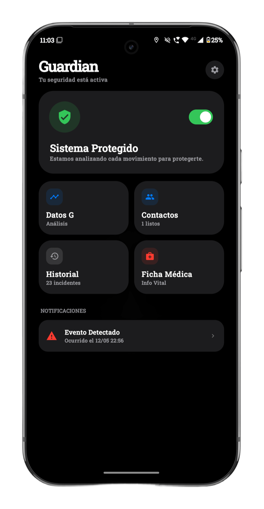

Guardian utiliza algoritmos de análisis sensorial para detectar accidentes en tiempo real y alertar a tus contactos cuando más lo necesitas.

Guardian integra múltiples sistemas de seguridad en una sola aplicación potente y ligera.
Monitoreo constante del acelerómetro y giroscopio para identificar patrones de impacto seco y caídas violentas.
Muestra tu información vital (sangre, alergias, EPS) directamente en la pantalla de emergencia para asistencia inmediata.
Grabación automática de audio ambiental tras un accidente para asegurar evidencia protegida en tu dispositivo.
Envío de ubicación precisa vía SMS y llamada automática a servicios de emergencia si el usuario no responde.
Descarga la última versión de Guardian y configura tus contactos de emergencia hoy mismo.
Obtener para Android